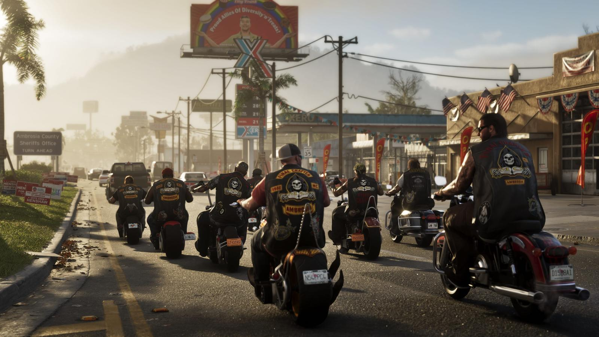
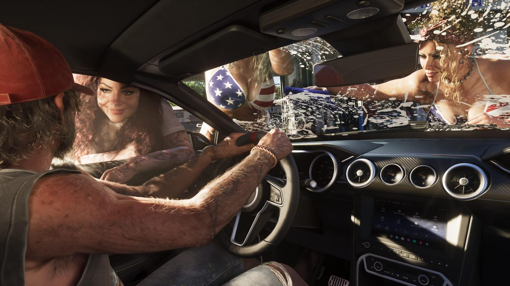

Миф: трейлеры GTA 6 — это пререндер, в игре так не будет
Обновлено:

- Rockstar официально заявила: второй трейлер снят целиком в игре на PS5.
- По словам студии, он наполовину из геймплея, наполовину из катсцен на движке.
- Журналисты спорят, где там геймплей: «найдите мне мои 83,5 секунды».
- Разрешение и частоту кадров GTA 6 на консолях Rockstar пока не раскрыла.
Миф
Правда: Rockstar заявила, что второй трейлер снят целиком внутри игры на обычной PS5. Спорный вопрос — не «игра или кино», а сколько там реального геймплея.
Этот миф понятен: за десятилетия индустрия приучила игроков не верить трейлерам. Отдельно отрисованные ролики, «вертикальные срезы», которые потом урезают, — всё это было. Поэтому когда второй трейлер GTA 6 показал лица с порами, мокрый асфальт и толпу на пляже, первой реакцией многих было: «В игре так не будет».
Что сказала Rockstar
7 мая 2025 года, на следующий день после выхода трейлера, Rockstar написала в X:
«Трейлер 2 Grand Theft Auto VI снят целиком внутри игры на PlayStation 5 и состоит из геймплея и катсцен в равных долях».
Rockstar Games, X, 7 мая 2025
Три важных слова: «внутри игры» — не отдельный ролик; «PlayStation 5» — не топовый ПК и даже не PS5 Pro; «в равных долях» — половина кадров, по словам студии, геймплей.
Второй трейлер за первые 24 часа посмотрели 475 млн раз на всех платформах — Rockstar назвала это крупнейшим запуском видео в истории, обогнав рекорды киноиндустрии. То есть под лупой сотен миллионов зрителей оказался ролик, про который студия прямо сказала: это не кино, это игра.

Пререндер, движок, геймплей — в чём разница
- Пререндер (CG) — ролик, отрисованный заранее на мощных компьютерах, как мультфильм. К игре он имеет отношение только сюжетом.
- Катсцена на движке — постановочная сцена, которую в реальном времени рисует сама игра, на той же консоли. Камера и действия заданы режиссёром, но графика — игровая.
- Геймплей — то, чем управляет игрок.
Заявление Rockstar закрывает вопрос о пререндере: и катсцены, и геймплей в трейлере 2, по словам студии, — это движок игры на PS5. Катсцены в самой игре будут выглядеть так же, потому что это одно и то же.
Где подвох
Подвох в слове «геймплей». Трейлер 2 длится 2 минуты 47 секунд — значит, геймплея, по заявлению, около 83 секунд. Журналист GamesRadar+ Джордан Гербик честно пересмотрел ролик и написал: «Я хочу знать, где мои 83,5 секунды геймплея». Уверенно он опознал лишь один момент — на 0:23, где Джейсон заходит в дом.
Проблема в том, что у Rockstar граница между катсценой и игрой почти не видна: нет интерфейса, мини-карты, прицела. Кадр, где Лусия едет по городу, может быть и тем и другим. Поэтому «50% геймплея» проверить невозможно — остаётся верить студии на слово или ждать 19 ноября.
И ещё одна оговорка: Rockstar не называла ни разрешение, ни частоту кадров на PS5 и Xbox Series X|S. Будет ли режим 60 fps и чем PS5 Pro отличится от обычной PS5 — неизвестно. Картинка из трейлера — это консоль, но с какими настройками, мы узнаем только после релиза.
Правда
🔴 Миф. Трейлеры GTA 6 — не пререндер: второй снят в игре на PS5, о чём Rockstar заявила официально. Спорно другое — сколько там геймплея, а сколько постановки на движке. Честный ответ появится только после релиза.
Что именно показали оба трейлера — Трейлеры GTA 6: что показали. Официальные кадры по деталям — в рубрике «Разбор кадра». Ещё 10 популярных заблуждений — 10 мифов о GTA 6.
Источники: Rockstar Games (X, 07.05.2025); GamesRadar+ (Джордан Гербик); TechRadar и TheGamer (475 млн просмотров за 24 часа).